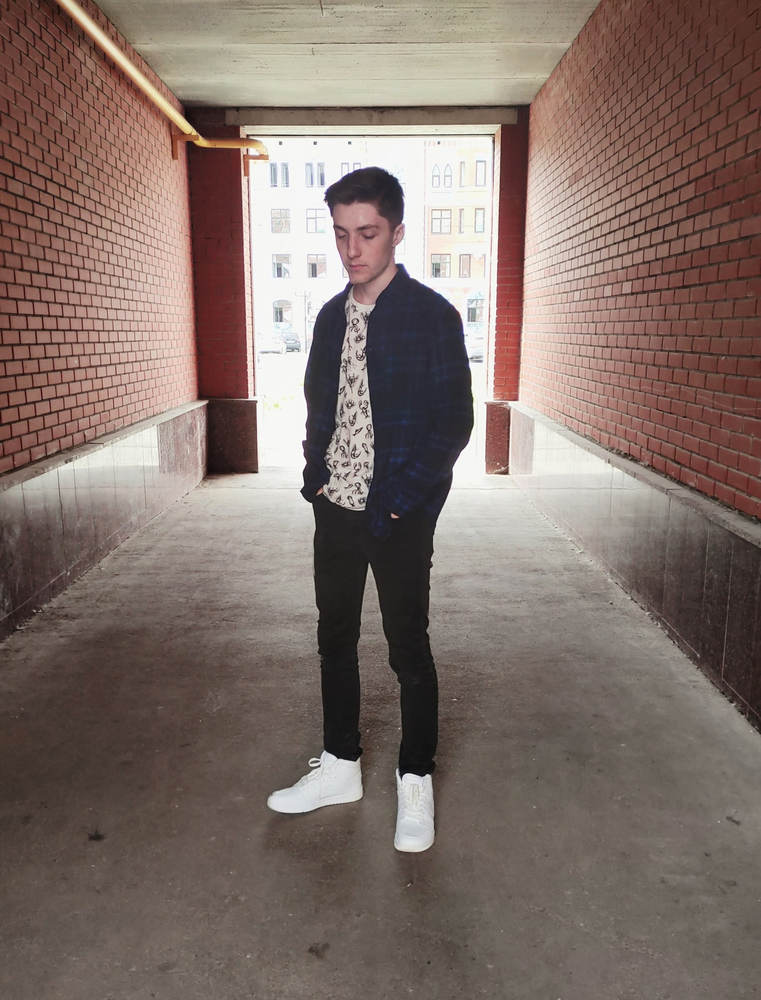

Моя первая страница

Раздел о себе
Я, Петухов Дмитрий, закончил 11 классов в МОУ СОШ №1. Выбор между ПС и ИВТ лёг в пользу первого
потому, что из интенсива по java script, проходившего летом, я узнал много нового. На ПСе мне понравилось,
вовлечённость студентов в компании с 1 курса - привлекает.
Хобби и увлечения
- Люблю читать книги, примерно одной в месяц мне хватает. Книги помогают узнать новое. Если это психология,
то можно разобрать точку зрения другого человека.
- Прохожу видеоигры на ПК.
- Частичный спорт и практика медитации - приносят удовольствие. Частичный потому, что я не хожу в зал, занимаюсь дома.